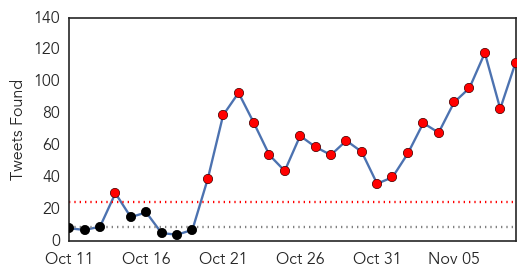
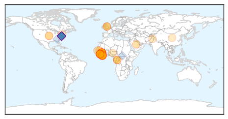
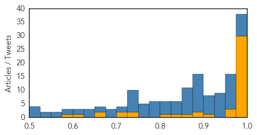
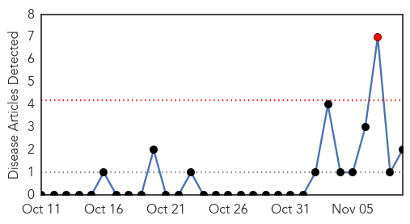
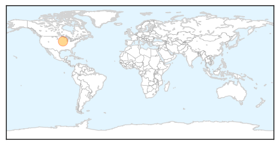

Ebola
30-Day Web Trend
2 alerts, 0 warnings

30-Day Twitter Trend
22 alerts, 0 warnings

Article Locations
Article Confidences
Top Articles:
- 1.000
- WHO Declares Sierra Leone Free Of Ebola
- 1.000
- Sierra Leone Declared Ebola-Free
- 1.000
- Sierra Leone's Long Road to Becoming Ebola-Free
- 1.000
- Sierra Leone ends Ebola transmission
- 1.000
- Sierra Leone's Ebola Outbreak Finally Over
- 1.000
- Sierra Leone Might Have Beaten Ebola
- 1.000
- WHO declares end to Ebola transmission in Sierra Leone
- 1.000
- Sierra Leone Declared Cost-free of Ebola Virus by UN Well being Agency
- 1.000
- Sierra Leone free of Ebola epidemic
- 1.000
- Sierra Leone declared free of Ebola, as Guinea struggles
- 1.000
- How West Africa is Crushing the Ebola Epidemic
- 0.999
- World Health Organization Says Sierra Leone Officially Ebola-Free : LIFE : Tech Times
- 0.999
- Sierra Leone celebrates end of Ebola epidemic, World News & Top Stories
- 0.999
- Sierra Leone Ebola-free! Residents celebrate momentous event : Latinos Health News : Latinos Health
- 0.999
- WHO officially declared Sierra Leone Ebola-free
- 0.999
- Ebola virus may persist 9 months in survivor’s sperms > IGIHE.com English Version
- 0.999
- Tourists Trickle Back To Ebola-Free Sierra Leone
- 0.998
- Ambassador Joins Pres. Koroma in hailing Sierra Leoneans
- 0.998
- Sierra Leone celebrates end of Ebola epidemic:Saturday 7 November 2015
- 0.998
- Sierra Leone celebrates end of Ebola epidemic
- 0.998
- Sierra Leone Officially Declared Ebola Free By WHO
- 0.997
- Experts say leadership, engagement were key to Ebola control in Liberia
- 0.995
- Sierra Leone declared Ebola free
- 0.994
- West African governments must integrate trained Ebola responders into community-based health systems
- 0.994
- Sierra Leone Declared Ebola-Free
- 0.991
- Sierra Leone is officially 'Ebola-free'
- 0.989
- US congratulates Salone « Awoko Newspaper
- 0.988
- Stellar Diamonds hails Sierra Leone's great achievement
- 0.985
- One Year Later, Where Does the U.S. Response to Ebola Stand?
- 0.977
- Scottish university scientist behind successful rapid-detection Ebola test
- 0.966
- Solar Light Vigil and March in Sierra Leone to Honour Health Care Heroes on the Eve of the Countdown to Zero Ebola Case
- 0.961
- Rapid-Detection Ebola Test Developed
- 0.953
- The Realities of Dealing with Ebola and Field Research
- 0.915
- Health Highlights
- 0.881
- Sierra Leone is Ebola free… residents hold candlelight vigil for those who died [pictures]
- 0.879
- Brooklyn inmate in solitary over Ebola fears has court date
- 0.868
- Sierra Leone News: Salone must be ready for any ebola relapse -Amb. Peter West « Awoko Newspaper
- 0.839
- Elder Bednar Visits Liberia After Country Declared Ebola-Free
- 0.803
- Germany: Migration Crisis Becomes Public Health Crisis
- 0.748
- Strengthening Diplomatic Ties
- 0.725
- EBOLA VIRUS: The Opposition Forces in Sierra Leone
- 0.725
- Daily Podcast – November 09, 2015
- 0.704
- WHO Director-General addresses global meeting of heads of WHO country offices
- 0.670
- Liberian president slams cabinet for cash birthday gift
- 0.656
- Statement by World Bank Group President on Declaration of End of Ebola Transmission in Sierra Leone
- 0.600
- Brooklyn inmate in solitary over Ebola fears has court date
- 0.578
- Erik Soderstrom
Top Tweets:
- 0.999
- Sierra Leone's Ebola Outbreak Finally Over - https://t.co/8uLNCF31mD ebola
- 0.998
- The Ebola Outbreak in West Africa - https://t.co/EZF9w6PlhQ ebola
- 0.998
- Cause for celebration: World Health Organization declares Sierra Leone's Ebola outbreak is over - https://t.co/HWD46MZeMX ebola
- 0.998
- EBOLA VIRUS US hospitals inject people with Ebola Virus https://t.co/cFU5DBafBi
- 0.998
- EBOLA VIRUS US hospitals inject people with Ebola Virus https://t.co/cFU5DBafBi
- 0.998
- EBOLA VIRUS US hospitals inject people with Ebola Virus https://t.co/cFU5DBafBi …
- 0.998
- EBOLA VIRUS US hospitals inject people with Ebola Virus https://t.co/cFU5DBafBi …
- 0.998
- EBOLA VIRUS US hospitals inject people with Ebola Virus https://t.co/cFU5DBafBi …
- 0.998
- EBOLA VIRUS US hospitals inject people with Ebola Virus https://t.co/cFU5DBafBi …
- 0.998
- EBOLA VIRUS US hospitals inject people with Ebola Virus https://t.co/cFU5DBafBi …
- 0.998
- EBOLA VIRUS US hospitals inject people with Ebola Virus https://t.co/cFU5DBafBi …
- 0.998
- EBOLA VIRUS US hospitals inject people with Ebola Virus https://t.co/cFU5DBafBi …
- 0.998
- EBOLA VIRUS US hospitals inject people with Ebola Virus https://t.co/cFU5DBafBi …
- 0.998
- EBOLA VIRUS US hospitals inject people with Ebola Virus https://t.co/cFU5DBafBi …
- 0.998
- EBOLA VIRUS US hospitals inject people with Ebola Virus https://t.co/cFU5DBafBi …
- 0.998
- EBOLA VIRUS US hospitals inject people with Ebola Virus https://t.co/cFU5DBafBi …
- 0.998
- EBOLA VIRUS US hospitals inject people with Ebola Virus https://t.co/cFU5DBafBi …
- 0.998
- EBOLA VIRUS US hospitals inject people with Ebola Virus https://t.co/cFU5DBafBi …
- 0.998
- EBOLA VIRUS US hospitals inject people with Ebola Virus https://t.co/cFU5DBafBi …
- 0.998
- EBOLA VIRUS US hospitals inject people with Ebola Virus https://t.co/cFU5DBafBi …
- 0.998
- EBOLA VIRUS US hospitals inject people with Ebola Virus https://t.co/cFU5DBafBi …
- 0.998
- EBOLA VIRUS US hospitals inject people with Ebola Virus https://t.co/cFU5DBafBi …
- 0.998
- EBOLA VIRUS US hospitals inject people with Ebola Virus https://t.co/cFU5DBafBi …
- 0.998
- EBOLA VIRUS US hospitals inject people with Ebola Virus https://t.co/cFU5DBafBi …
- 0.998
- EBOLA VIRUS US hospitals inject people with Ebola Virus https://t.co/cFU5DBafBi …
- 0.998
- EBOLA VIRUS US hospitals inject people with Ebola Virus https://t.co/cFU5DBafBi …
- 0.997
- Sierra Leone rejoices end of Ebola epidemic - https://t.co/tf5eBtBZhz ebola
- 0.997
- Sierra Leone after Ebola: What next? - https://t.co/xoJCNIuk2d ebola
- 0.997
- Sierra Leone after Ebola: What next? - https://t.co/RTJ9Oa0m3e ebola
- 0.997
- Fin de l'épidémie Ebola au Sierra Leone, le virus résiste en Guinée https://t.co/fMYQ5Tjkbv
- 0.997
- End of Ebola Outbreak in Sierra Leone - https://t.co/cIZzrvyDpx ebola
- 0.996
- Sierra Leone celebrates end of Ebola outbreak - https://t.co/fGtgjavRJZ ebola
- 0.995
- Virus itera Ebola ishobora kumara amezi icyenda mu ntanga z'uwayikize - https://t.co/kNdI2lqloH ebola
- 0.995
- Ebola outbreak Sierra Leone declared free of disease - https://t.co/QNb3Eu9xE7 ebola
- 0.995
- Ebola dubsmash - https://t.co/Ifesyps8wT ebola
- 0.995
- Ebola Zombies FullMoviE - https://t.co/Yppwl9jmXS ebola
- 0.995
- Ebola - https://t.co/W4TJpVH9Bg ebola
- 0.995
- Ebola - https://t.co/PuTT38r03O ebola
- 0.995
- EBOLA RICOLA - https://t.co/MGbdpmqScl ebola
- 0.993
- World Health Organization to declare end of Ebola in Sierra Leone - https://t.co/g5BsYO9xQr ebola
- 0.993
- World Health Organization Says Sierra Leone Officially Ebola-Free - https://t.co/TRkItoxfIg ebola
- 0.993
- Sierra Leone Might Have Beaten Ebola - https://t.co/ZRLiP5CcOg ebola
- 0.992
- World Health Organization refutes 'rumor' of new Ebola case in Sierra Leone - https://t.co/65UPMZM01H ebola
- 0.992
- Sierra Leone free of Ebola epidemic - https://t.co/1OEFi0tLDN ebola
- 0.992
- Sierra Leone declared Ebola - https://t.co/WYWaT1lAGE ebola
- 0.992
- EBOLA VIRUS https://t.co/cFU5DBafBi …
- 0.991
- Sierra Leone is Now Ebola-Free - https://t.co/9A1B5eXJL9 ebola
- 0.990
- WHO: Sierra Leone Free of Ebola Transmissions - https://t.co/lkuStJVqPE ebola
- 0.989
- Sierra Leone ends Ebola transmission - https://t.co/Vcsh6bD9Fj ebola
- 0.988
- read more - https://t.co/DFCpDJpyPY ebola
Showing top 50 tweets...
Mumps
30-Day Web Trend
1 alerts, 0 warnings

30-Day Twitter Trend
0 alerts, 0 warnings

Article Locations
Article Confidences

Top Articles:
Top Tweets:
- 0.588
- Norway has a mumps outbreak. College students. Wonder if it will spread? https://t.co/b02ooXFqm8